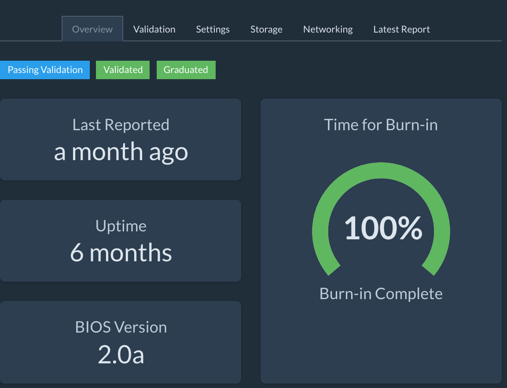

Status Information¶
Status Information¶
Status Page: Validation Progress¶
The Status page contains a progress diagram. Each cell represents a rack.
As systems come online and begin validation, the cells in the bar will fill.
| Color | Description |
|---|---|
| Grey | Pending |
| Green | All devices validated |
| Blue | Devices in progress |
| Red | One or more devices have failed validation. |
Status Page: Validation Failures List¶
The Status Page contains a summary of the devices with validation problems. Click View Device to open details and review the validation failures.
Device Details: View Validation Failure¶
When a device fails validation, the Validation tab in the Device Details view will provide information on what has failed. In this case, the devices networking is not cabled correctly.
Device Details: Validation Complete¶
When a device has validated completely, the Device View will look something like this:

Icons Legend¶
| Icon | Description |
|---|---|
| Item requires attention | |
 |
If device, it is failing validation. If datacenter or rack listing, a device contained within is failing validation. |
| Datacenter, rack, or device is currently being validated. | |
 |
No report has been collected from this device yet. |
 |
Device has been validated and has been shut down. |